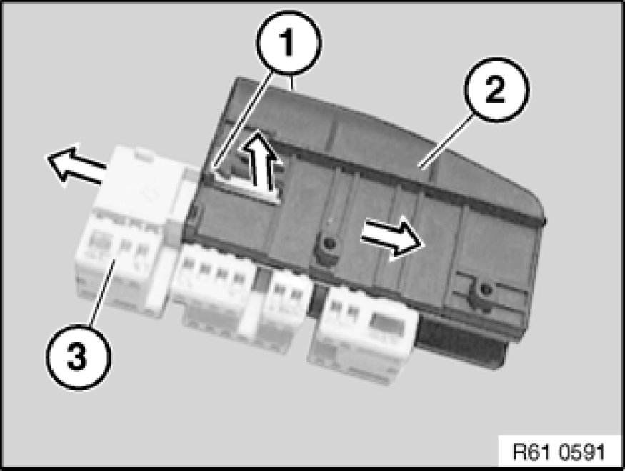
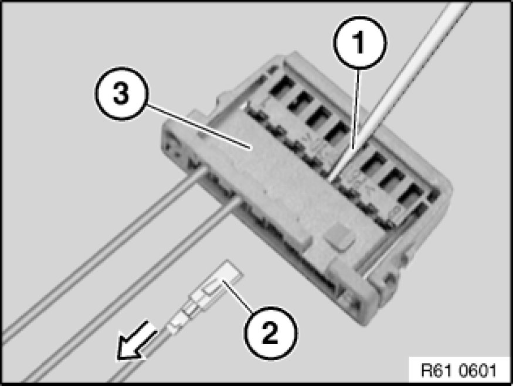
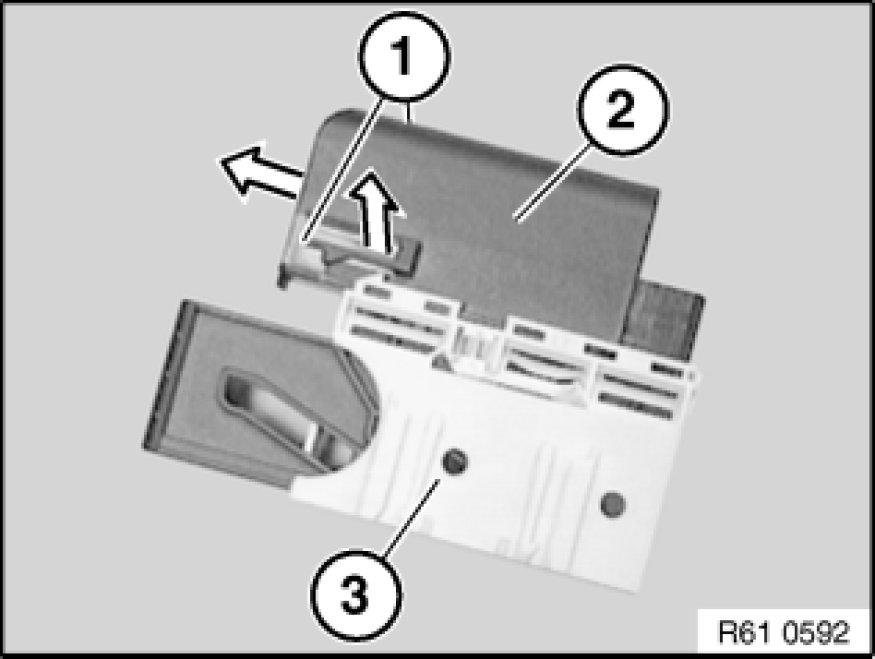
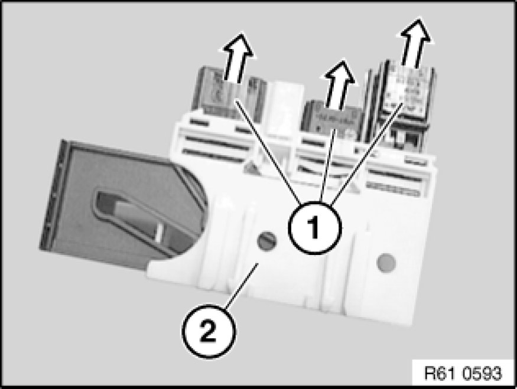

In-line Plugs, 24-pin, Hybrid System MQS/MPQ
61 13 ... - In-line plugs, 24-pin, Hybrid System MQS/MPQ

Manufactured by AMP: The following contact types without strand sealing can be fitted in the plug housings:
- MQS (Micro Quadlock System)
- MPQ, width 2.8 mm (Micro Power Quadlock)
- MPQ, width 5.2 mm (Micro Power Quadlock)

Socket housing:
Press locks (1) on cap (2) upwards on both sides.
Detach cap from contact carrier (3).
Note:
Detaching the cap releases the secondary locks of the socket contacts.

Hold down retaining hook (1) of socket contact in opening of contact carrier with a small screwdriver.
Pull wire with socket contact in direction of arrow as far as secondary lock (2).

Hold down retaining hook in secondary lock (1) again and pull cable with socket contact (2) completely out of contact carrier (3).

Pin housing:
Press locks (1) on cap (2) upwards on both sides.
Detach cap from housing carrier (3).
Note:
Detaching the cap releases the secondary locks of the pin contacts in the contact carriers.

Pull contact carrier (1) out of housing carrier (2).
The pin contacts are pulled out of a contact carrier as described under "Socket housing".